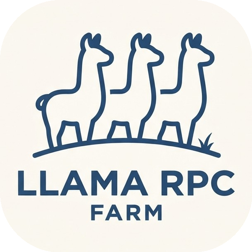

aibox-01master
2× RTX 409048 GB
GPU 081%
GPU 167%
qwen3-32b · streaming

Llama RPC FarmDistributed inference for hardware you own
Turn spare gaming rigs, workstations, and Linux boxes into one coherent local AI cluster. One dashboard. One API. Every model served by the hardware you already have.
01 One control plane
Llama RPC Farm sits above the mess: mixed GPUs, mixed operating systems, models spread across machines. You get one place to see it, route it, and serve it.
Find every agent, GPU, and loaded model across the farm.
Place models where they fit. Split, shard, or keep them local.
Expose one stable, OpenAI-compatible endpoint to your tools.
Stream live VRAM, RAM, CPU, and model activity as it happens.
02 Built for real rigs
Every surface is designed to make a heterogeneous pile of hardware feel like one deliberate machine.
Route chat, embeddings, and completions through one OpenAI-compatible surface. llama-swap decides which model wakes up and where it lives.
Per-machine stats arrive as an NDJSON stream. Cards update the moment a host answers, so one slow box never freezes the rest of the farm.
Agents, binaries, builds, and launch configs are handled for you. CUDA, ROCm, Vulkan, and mixed vendors are all first-class citizens.
Scoped API keys, web logins, per-key model visibility, and per-user themes. The right person sees the right models — and their own dashboard.
A dashboard with a pulse
Twenty background modes and dozens of color themes — from gemstone geology to famous sites, shows, books, and retro hardware. It should feel good to stare at.
farmctl speaks the same API as the dashboard. Script status checks, warm a model, or snapshot the farm for support without opening a browser.
03 Make it yours
Pick a palette, tune the glow, choose a background. Your theme travels with your access key, not the browser.
Volcanic black, iridescent violet, and molten copper. Built for late-night tinkering.
04 Download
Grab a release for your OS, or use the one-line installer. Every build and source wheel comes straight from the latest GitHub release. Raspberry Pi on Trixie/Ubuntu 24.04 uses the arm64 .deb; on Bookworm (glibc 2.36) use the source installer — the farm builds llama.cpp automatically.
Windows 10/11 · x64
Download installerApple Silicon · arm64
Download packageUbuntu / Debian · x64
Download .debRaspberry Pi · Trixie / Ubuntu 24.04
Download arm64 .debAny OS · Python 3.11+
Download wheelcurl -fsSL https://raw.githubusercontent.com/dakotacookson/Llama-RPC-Farm/main/scripts/install-remote.sh | bash
Clones to ~/Llama-RPC-Farm, installs everything, and puts farmctl on your PATH.
Use an installer or the source wheel. No admin account required for a local source install.
Discover peers and let the app provision the lightweight agent.
Visit http://127.0.0.1:8199 and load your first model.
Optional, until you add a peer
The peer agent is the typed, token-authenticated bridge between the farm and each remote machine. Install it once; the app discovers and pairs it automatically.
Windows 10/11 · x64
Download agentApple Silicon · arm64
Download agentUbuntu / Debian · x64
Download agentRaspberry Pi · Trixie / Ubuntu 24.04
Download agentAny OS · Python 3.11+
Download wheelcurl -fsSL https://raw.githubusercontent.com/dakotacookson/Llama-RPC-Farm/main/scripts/install-remote-agent.sh | bash
Installs the user service on port 8198. The farm app pairs it automatically during discovery.
05 Headless by default
farmctl is a first-class client over the same API. Perfect for scripts, cron jobs, remote shells, and the terminal you already live in.
farmctl statuscluster + llama-swap statusfarmctl modelsconfigured models and variantsfarmctl startstart the daemon, no warmupfarmctl launch --model IDwarm one modelfarmctl unload IDfree its VRAM / RAMfarmctl doctorreadiness checklist$ farmctl status
cluster 4 nodes online
llama-swap up · 127.0.0.1:8080
models 2 loaded / 14 configured
vram 186 GB used / 256 GB
$ farmctl launch --model qwen3-32b
✓ qwen3-32b loaded on aibox-01 (18.4s)
$ Your hardware is already enough
Open source, Apache 2.0, and built to run on the machines you already own.